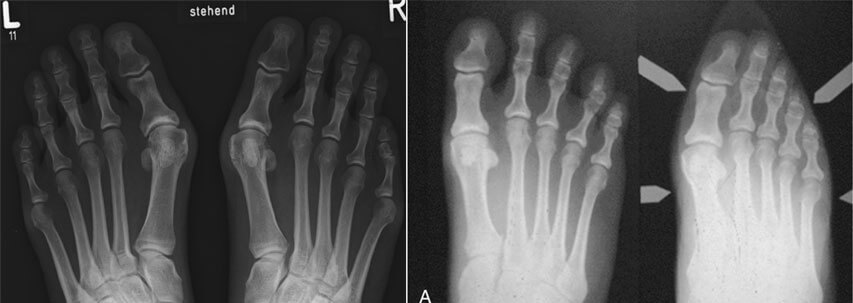
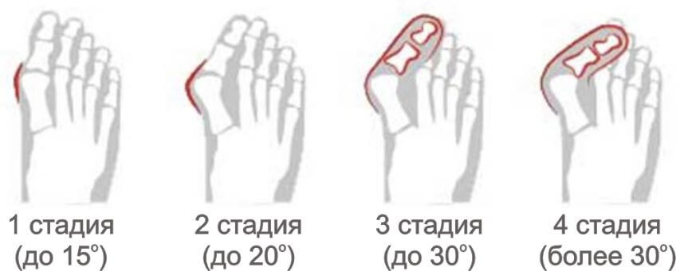
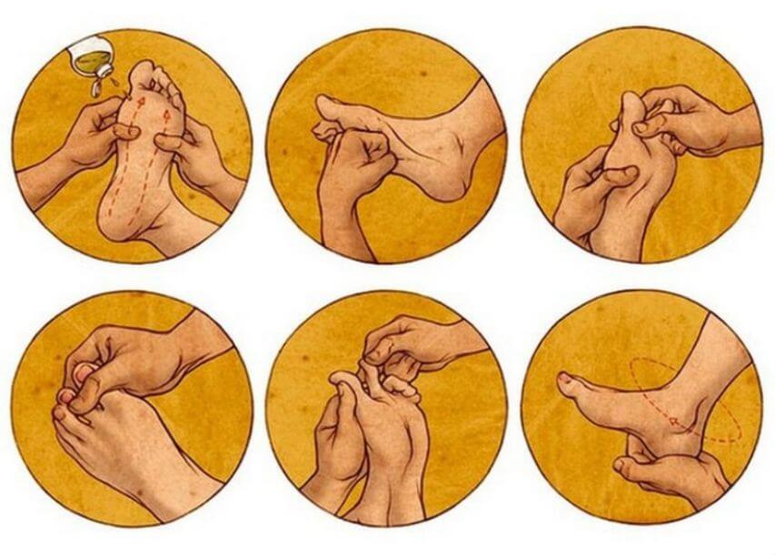
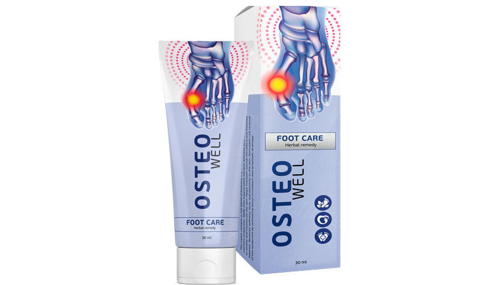

– Здравствуйте, спасибо, что смогли найти время и ответить на наши вопросы. Расскажите, какие причины развития Hallux valgus?
Ответ от Edward Fisher:
– Причин много. Это может быть гормональная, генетическаяпредрасположенность или из-за ношения неправильной обуви. То есть, если у мамы была такая проблема, то она может перейти к дочери. Или есть предрасположенность и из-за лишнего веса или диабета первый палец начинает отклоняться в сторону.
– Правда ли, что это исключительная женская болезнь?
Ответ от Edward Fisher:
– Это миф. Hallux valgus может быть и мужчин. У женщин заболевание встречается чаще, так как они носят модельную и тесную обувь с узкими носами, высокими каблуками или вообще на плоской подошве. Из-за этого и начинает выпирать косточка. Я покажу вам как выглядит стопа в обуви с узким носом и что произойдет впоследствии.
Влияние модельной обуви на передний отдел стопы.
– Мужчины и правда любят свободную обувь, а женщинам приходится идти на такие жертвы ради стандартов красоты. Если ли норма отклонения пальца в сторону, когда это не считается патологией?
Ответ от Edward Fisher:
– Если большой палец отклоняется в сторону, то уже идет деформация. Современная медицина выделяет четыре стадии вальгуса, которые различаются углом отклонения пальца относительно основной оси стопы. При первой – не более 15°. Чувствуется только дискомфорт и мешают частые мозоли. Болезнь достаточно быстро переходит во вторую стадию – угол отклонения до 20°. Уже значительно чувствуется боль и отечность ног. Отклонение до 30°, то есть третья стадия – выражено сильной деформацией, где первый палец накладывается на второй. Нарост уплотняется по типу твердой мозоли. Начинают беспокоить мучительные боли по ногам. Если угол более 30°, то это финальная стадия, при которой деформация прогрессирует и вызывает сопутствующие заболевания, перетекающие в инвалидность:
- неврома Мортона;
- остеопороз;
- бурсит;/li>
- артрит большого пальца ноги
- артроз пораженного сустава.

– Как выявить первые признаки?
Ответ от Edward Fisher:
– Вначале больной ощущает только легкий дискомфорт при длительной ходьбе и усталость ног под вечер. Но если возникают сложности с ношением и подбором привычной обуви, появились боль, отеки, покраснения и мозоли – это уже первая стадия Hallux valgus.
– Поддается ли лечению деформация первого пальца? И если да, то на какой стадии?
Ответ от Edward Fisher:
– Вылечить вальгусную деформацию первого пальца на любой стадии, будут отличаться только методы. Раньше, начиная со второй стадии, “шишку” можно было убрать только при помощи операции. Минусов в хирургическом вмешательстве, конечно, много.
– Какие минусы операции?
Ответ от Edward Fisher:
– Операции совершенствуются, но случаются рецидивы и неудачные операции, приводящие к состоянию близкой к инвалидности. Даже если пациент тщательно выполнял послеоперационный режим. Все это зависит напрямую от профессиональности хирурга и правильности выбора операционного метода.
– Вы говорили, что сейчас есть альтернативное лечение. Расскажите, какое?
Ответ от Edward Fisher:
– Среди консервативного лечения применяется медикаментозный метод из группы нестероидных противовоспалительных средств, физиотерапевтические процедуры, лечебная физкультура, ношение ортезов и ортопедической обуви.
– Как долго убирать “шишку” при помощи этих методов?
Ответ от Edward Fisher:
– Массаж, лечебную физкультуру, ношение шины ночью и межпальцевых вставок днем придется делать на постоянной основе. Чередуют только физиотерапию и медикаментозные методы.
– Получается, если появилась вальгусная косточка, то придется лечить ее до конца жизни? Неужели нет других методов?
Ответ от Edward Fisher:
– Я не успел вам рассказать о последней методике. Не все больные могут пожизненно бороться с “шишкой”. Чтобы не было прогрессирования болезни, был создан корректирующий нестероидный крем Osteowell. На сегодняшний день это единственный препарат, способный уменьшить боль, воспаление, отечность и вальгусную косточку.
– Очень интересно! Как работает крем при Hallux valgus?
Ответ от Edward Fisher:
– В крем Osteowell входят натуральные компоненты, способствующие естественной выработке коллагена, который укрепляет связки и повышает эластичность мышц. Активная формула снимает боль, воспаление, отек и способствует выводу мочевой кислоты из синовиальной сумки. Впоследствии сустав становится более подвижным и принимает правильное физиологическое положение.
– То есть можно только пользоваться кремом и сразу “шишка” исчезнет?
Ответ от Edward Fisher:
– Не сразу, но гораздо быстрее, чем при стандартном лечении. Результат будет виден в зависимости от степени заболевания. Кому-то достаточно одного курса, а кому-то 2-3. Все индивидуально. Я советую всем своим пациентам, для достижения более быстрого эффекта наносить крем 2-3 раза в день на проблемную зону, делая при этом специальный массаж.

Курс можно повторить при необходимости, так как крем не содержит в себе синтетических и стероидных ингредиентов, которые способствуют изменению гормонального фона.
– Спасибо вам большое за интервью. Я думаю очень много людей нашли решение своей проблемы. Осталось только узнать, где можно купить это средство.
Ответ от Edward Fisher:
– Спасибо и вам за приглашение. Чем раньше начать решать проблему, тем больше вероятность, что вы добьетесь успешных результатов, которые предотвратят хирургическое вмешательство. А крем Osteowell можно заказать на официальном сайте производителя.
